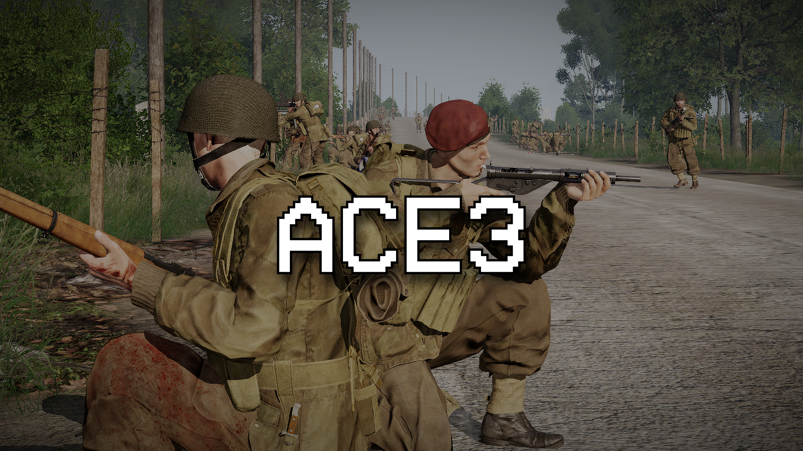

Body colours
- White: no displayed wound.
- Blue: bandaged wounds or bruising.
- Yellow to Red open wounds, increasing in severity.
A blue body part is not necessarily finished and bandaged wounds may still need stitching.
A practical reference guide for ACE medical, our custom settings, and features added by the Misfits Aux mod.

ACEs Medical system can be intimidating at first, but as a group we play with a relatively simple set of options (even where we have turned on some advanced features) that serve to add enough depth to the medical gameplay system without being too intrusive, boring or unneccesary.
As a general rule, you should focus on the following things in any medical situation:
Non-medics: Your job is not to get the casualty up by yourself. Get them out of immediate danger of death and hand them off to a medic.
Medics: Your job is to respond to calls for medics, and organise treatment - dont be afraid to dish out orders to get people away from patients, or providing extra aid to help you out!
ACE does not use any kind of "health bar" for damage. Trauma, blood volume, pain, heart rate, blood pressure, cardiac arrest and medication all interact. The Misfits Aux breathing system adds airway status, breathing and SpO₂ to that recovery loop.
Open and bleeding wounds will prevent a patient from regaining consciousness.
Pain reduces effectiveness, and if it exceeds a threshold it can render a player unconsciousness.
The normal in-game blood volume for players is 5L. There are four states of blood loss.
A normal in-game range for heart rate is ~60–80bpm. Extreme low or high values will render players unconscious.
A product of blood volume and heart rate. Stable values are ~120/80.
Once the dangerous problems are corrected, ACE periodically checks whether an unconscious patient can wake. Epinephrine increases the opportunity for those checks, but is not a flat guarantee that someone can become conscious again.
| Item | What it does | Remember |
|---|---|---|
| Bandage | Closes an open wound and stops that wound bleeding. | In our setup, bandages have different efficiencies and wounds can reopen unless stitched by a medic. |
| Tourniquet (CAT) | Immediately stops bleeding from every wound on an arm or leg. | Temporary only. It causes ever-increasing pain after ~5 minutes and blocks medication/IV flow through that limb. |
| Splint | Treats a fractured limb and restores mobility. | Control bleeding before worrying about fractures. |
| Morphine | Strong pain relief that lowers heart rate and blood pressure. | Repeated doses can dangerously suppress heart rate and knock out a patient unintentionally. Check the treatment log. |
| Painkillers | Gentler pain management without using a morphine injector. | Useful for less severe pain but can take a minute to come into effect. |
| Epinephrine | Raises heart rate and improves an eligible unconscious patient's wake-up chances. | It does not replace blood, close wounds or guarantee consciousness. |
| Adenosine | Lowers an excessively high heart rate under advanced medication. | Not used for routine treatment. |
| Blood, Plasma and Saline IVs | Replace lost blood volume over time. | These are restricted to medics-only in our settings. |
| Surgical Kit / Suture | Closes bandaged wounds so they can no longer reopen. | Stitching requires sutures as well as the kit, and sutures are consumed for each wound stitched. |
| Personal Aid Kit (PAK) | Provides full treatment of a patient | Takes a long time, and can only be used in medical vehicles/facilities as per our settings. |
Bandaging turns an open wound into a closed but potentially temporary repair. A medic must use the Surgical Kit on bandaged wounds to make that repair permanent. Bruises do not need stitching and do not block the PAK.
Use CPR on a patient in cardiac arrest. CPR is the primary way to restore a patients heart rate provided that their blood volume will allow it. Keep the airway clear, stop blood loss, replace volume where required, and then begin CPR. If someone nearby is able to assist with CPR while you work on more important things, this is ideal.
The PAK action remains hidden until the patient is considered "stable". For our settings this means no open wounds, all wounds bandaged, fractures treated, heart rate normal, blood pressure normal, blood volume <85% (Only lost some blood), no fractures, conscious. If the PAK action is absent, it is likely that something else needs resolving first.
Dragging starts quickly but is slow. Carrying takes longer to begin but moves faster. The Misfits stretcher can transport a casualty and acts as a medical vehicle/facility.
Misfits Medical provides a compact KAT-style respiratory system, but without the hassle of oxygen tanks, pneumothorax, chest drains or a full respiratory simulation.
The underlying system behind Misfits Aux breathing and airways is SpO2, which is the measurement for how much oxygen is in a patient's blood. Anything below 90% is not good news. Breathing is what maintains good SpO2 levels (you live in the real world right? You should know this...). When knocked unconscious, or in certain scenarios, players may lose the ability to breath, at which point their SpO2 will slowly decrease.
Airways, otherwise known as your throat hole (unless youve discovered how to breathe out of your anus) are the thing that facilitates breathing. Being knocked unconscious, or encountering something like a chemical threat, can either obstruct or occlude an airway. Obstructed or occluded airways will no longer allow patients to breathe through them properly, and will diminish SpO2.
Head extension or head turning is a fast way to help remove occlusions or obstructions from a patients airway and get them breathing again. Patients can also be put in the Recovery Position, which is a more sustained method of maintaining the airway - but it is not permanent.
Medics have access to a new Airway Tube item that provides a reliable method of clearing and maintaining the airway. It also improves the rate of SpO2 recovery for players who receive it.
! Prolonged failure to breathe reduces SpO2. SpO2 must be >90% for players to be considered stable. Just because an airway is clear does not mean that the patient is breathing - they may need other systemic problems dealt with like heart rate, blood volume etc. before they are able to resume breathing.
| Item or system | Role | Limits |
|---|---|---|
| Emergency Fluid Bag | A 100 mL emergency blood-volume stopgap usable by non-medics. | Deliberately a much smaller volume that standard IVs, but can be used in an emergency by any role. |
| TXA Injector | Medic-only treatment that modestly reduces blood loss for a limited time. | Does not bandage, stitch, restore blood or stabilise the patient by itself. |
| Universal Antagonist | Medic-only emergency reset that clears the patient's active medication burden. | Self-administration is allowed for medics. It will not remove any physiological effects caused by previous medication misuse. |
| Medical Aid Pack | A deployable medical supply crate for medic roles. | Repacking preserves the contents. |
| Stretcher | Moves casualties and can provide a medical-facility treatment position. | Can be folded and recovered when no longer required. |
| Vanilla Kit Conversion | Converts retrieved vanilla First Aid Kits and Medikits into more meaningful ACE supplies | The output is controlled via config. |
| Misfits Serum | A very serious injectable drug. | Not tested on humans, yet. |
| Misfits Essential Oils | Requisitioned from a TikTok wellness influencer. | Cures every single disease known to man. |
Do not load Misfits Airway alongside KAT Airway. The Misfits system is the group's compact alternative..